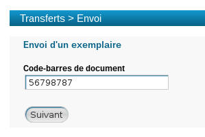

Envoi
Le menu Envoi permet de visualiser la liste des exemplaires dont vous avez accepté le transfert et que vous devez envoyer vers le site destinataire :
Pour chaque document, PMB affiche :
le
titreet lenuméro de l'exemplaireà envoyer,le nom de l'
Emprunteur,
la
destination(localisation où doit être envoyé le document),le
propriétairedu document,
les dates de
création(demande) et d'acceptationdu transfert,le
motifde la demande de transfert si celui-ci est renseigné.
Le lien Éditions renvoie vers l'onglet Éditions. Ce lien vous permet ainsi d'éditer la liste des documents en attente de transfert.
Pour plus d'informations, voir la partie du guide concernant l'onglet Édition.
Remarque
Dès lors qu'un exemplaire doit être transféré depuis votre localisation, un message d'alerte le signale dans l'onglet Circulation :
Un clic sur cette alerte vous renvoie automatiquement vers le menu Transferts > Envoi.
ProcédureTransférer un exemplaire vers un site⚓
Attention
Cette procédure doit être effectuée uniquement au moment où vous transférez physiquement l'exemplaire vers le site destinataire.
Confirmer l'envoi de l'exemplaire
Dans
Circulation>Envoi, douchettez le code-barres de l'exemplaire à transférer dans le champ situé au-dessus de la liste :Remarque
Il est possible de confirmer l'envoi de plusieurs exemplaires en une seule fois.
Pour cela, le paramètre
Autorise le traitement par lot en envoidoit être activé dans les paramètres avancés des transferts (Administration>Transferts>Circulation).Vous sélectionnez alors les documents souhaités (en cochant leur case) et cliquez sur le bouton
Accepterpuis surOK.Visualiser le transfert confirmé
Un message confirme ensuite l'envoi de l'exemplaire :
Remarque
L'exemplaire prend le statut En transfert (ne permettant pas de l'emprunter).
A ce stade, vous devez procéder au transfert physique de l'exemplaire (envoi par navette,...).
Remarque
Il est possible de regrouper la gestion des départs dans un seul menu en Circulation. Lorsque ce paramètre est activé, il est possible de valider les envois et les retours à partir du même écran.
Pour en savoir plus consultez le chapitre Administration.